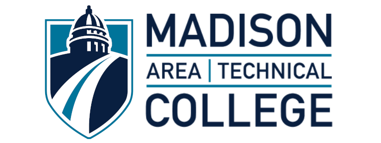
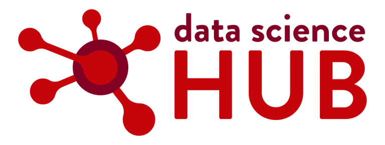

-

The Data Science Institute
We were founded by Kyle Cranmer, the director of the University of Wisconsin Data Science Institute. A key component of Kyle's strategic vision for DSI is to robustly support open source efforts and to provide organizational, financial, and governance models for other data science institutes and centers around the country. Our offices are located alongside the DSI offices in the McArdle Building on the UW-Madison Campus.
-

Madison College
We are working with Perry Govier, an instructor at Madison College, to encourage students from Madison College’s software development program to participate in the OSPO’s activities and help advertise its Open Source Developer internships.
-

Data Science Hub
The DSI closely collaborates with the Data Science Hub on community engagement and training initiatives. The OSPO will collaborate with the Data Science Hub on the creation and execution of a Carpentries training module specifically focused on open source.
-

Wisconsin Alumni Research Foundation
The OSPO will work with the Wisconsin Alumni Research Foundation to develop open source licensing guidance and connect with the entrepreneurship community. WARF provided a letter of support for OSPO.
-

UW-Madison Libraries
In collaboration with UW-Madison Libraries, the OSPO will conduct a campus-wide survey assessing the state of open source on campus and develop tracking tools for community open source activity.
-

UW Extension
We are working with the UW extension to promote the Wisconsin Idea, one of the longest and deepest traditions surrounding the University of Wisconsin.
-

UW Office of Business Engagement
We are working with and will conduct workshops with the UW’s Office of Business Engagement to identify promising companies where there may be overlap and initiate those dialogues.
-

NumFOCUS
NumFOCUS promotes open practices in research, data, and scientific computing. We are working with Matthew Feikert, a NumFOCUS organizer and key member of the NumFOCUS community.
-

Lightning AI
Lightning AI developed and open sourced PyTorch Lightning. Their Lead AI Educator, Sebastian Raschka, is a member of our Advisory Board.